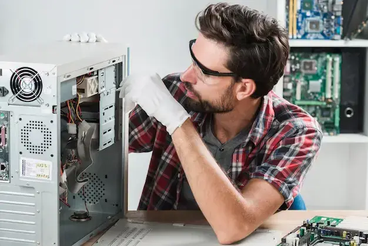

Reparación de laptops
Diagnóstico, cambio de componentes, limpieza interna y solución de fallas de arranque, pantalla o energía.
En Novotec te ayudamos a resolver fallas de software, hardware, virus, lentitud, redes y recuperación de datos con atención clara, honesta y profesional.

Servicios
Mantenimiento, soporte y recuperación con una experiencia ordenada y profesional.
Diagnóstico, cambio de componentes, limpieza interna y solución de fallas de arranque, pantalla o energía.
Mantenimiento preventivo y correctivo para equipos de escritorio, optimización y actualización de hardware.
Eliminación de malware, revisión de amenazas y recomendaciones para proteger tus datos y tu productividad.
Apoyo para rescatar información crítica en discos, memorias y sistemas con fallas lógicas o físicas.
Instalación, configuración y puesta a punto de sistemas operativos y aplicaciones esenciales.
Asesoría para redes, conectividad, impresoras y solución de problemas de internet en casa o negocio.
Experiencia
Nacimos como un taller pequeño en Hermosillo y crecimos con una idea simple: dar soporte técnico serio, con explicaciones claras y soluciones que realmente sirvan.
Preguntas Frecuentes
Respuestas claras sobre tiempos, respaldos y garantías en Hermosillo.
Contacto
Completa el formulario y te abrimos WhatsApp con tu mensaje listo para enviar.
Hermosillo, Sonora, México
Ver en Google MapsAtención directa y cotizaciones rápidas
+52 662 508 5372